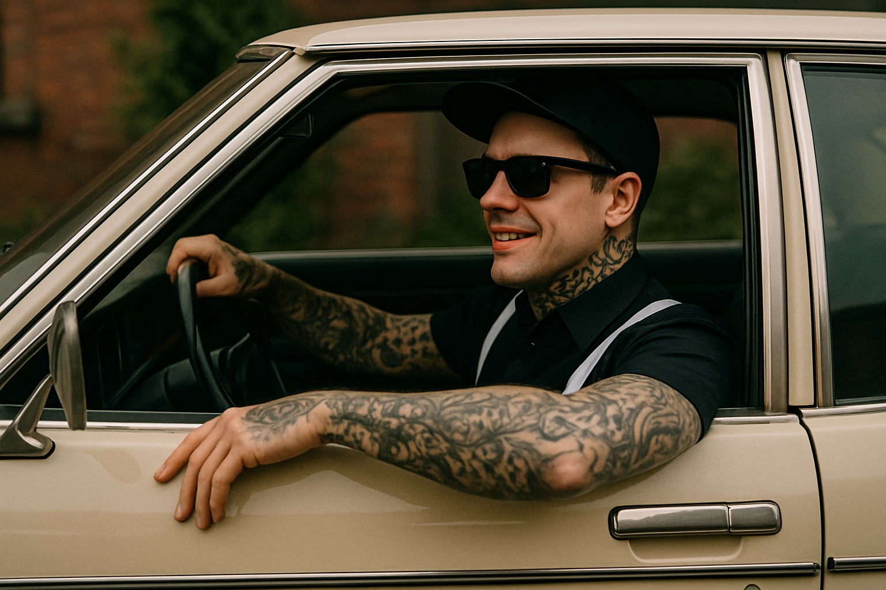
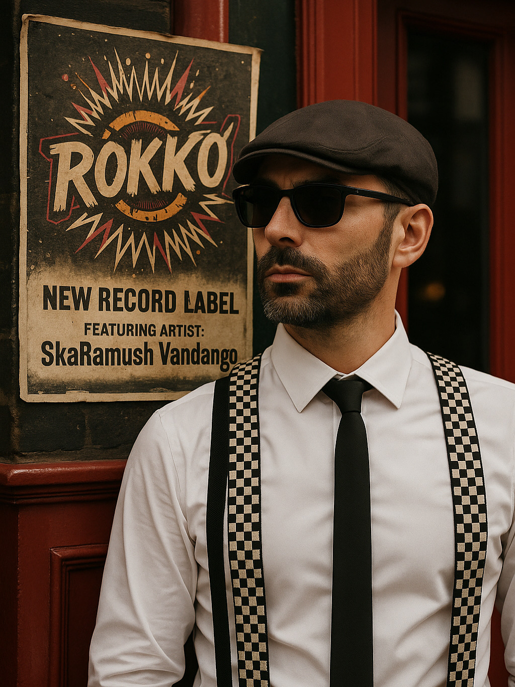

Neurodiverser Songwriter aus dem Ruhrpott. Nach seiner Autismus-Diagnose hat er sich zurückgezogen,
Altes losgelassen und Texte, die jahrelang in der Schublade lagen, endlich in Musik verwandelt.
Er schreibt und singt ausschließlich deutschsprachige Songs – direkt, verletzlich, ohne Glitzer.
Neben seinen eigenen Releases produziert und textet er für weitere Artists bei ROKKO! Records.
Endlich schlafenDer Tag an dem es regnet
Henri Bellieu
Französischer Poet zwischen Chanson, Blues und Rock. Klare Bilder, große Gefühle –
Liebe, Sehnsucht, Vergänglichkeit – ohne Kitsch. Musik wie ein abendlicher Blick
aus dem Café auf die Straße: lebendig, echt, unmittelbar.
La FemmePetite Colibri

Skank Schablonski
Krawall mit Köpfchen: Humor, Haltung, ein Bass der schiebt. Geboren im Ruhrpott,
veredelt mit Ironie. Seine Satire macht die Hüfte locker und den Kopf klar –
klare Ansage gegen braunen Mief.
Kohle raus, der März kommt
Fleur Benuine
French-House aus Paris: Retro-Charme trifft treibende Club-Energy.
Originale und Remixe, die Playlists und Floors anwerfen – elegant, catchy,
mit Augenzwinkern.
Feux LégèreFeux Légère (Remixes)

SkaRamush Vandango
Label-Boss, Produzent, Mastermind hinter dem ROKKO!-Kosmos. Multi-Persona
mit goldener Stimme, großem Maul und noch größerer Liebe zu starken Texten.
Motto: Musik muss den Poppes wackeln lassen. Wenn es ihn nicht grinsen
lässt, ist es schlicht egal.
About
ROKKO! Records – Indie-Label mit Herz im Ruhrpott. Sandfarbener Grund, Schwarz-Weiß-Look,
klare Kante. Kein Genre-Korsett: Wir veröffentlichen, was kickt und echt ist.
News
Launch & erste Releases. Mehr folgt.
Contact
Kontaktadresse folgt. Bis dahin: Socials der Artists.